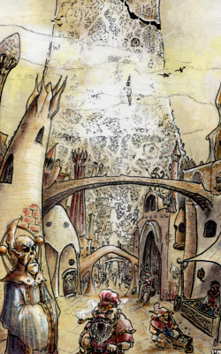
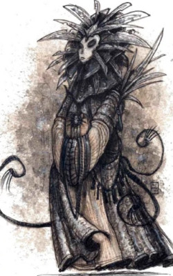
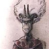

Vous venez de quitter Sigil, la Cité des Portes, aussi appelée la Cage par ses habitants, car il n’est possible d’en sortir (comme
d’y rentrer) que par des portails. Ces derniers
parsèment la ville, pouvant être portés par
n’importe quelle ouverture (arche, porte, fenêtre,
trappe), et activés par des clés de toutes
formes, matérielles ou non. Toute personne qui
traverse l’ouverture en ayant la clé (qui peut
aussi bien être un élément physique concret
porté sur soi, comme une véritable clé ou un
bout de marbre, qu’un état d’esprit donné,
un air siffloté ou une couleur de vêtement)
est projetée à travers les plans pour se retrouver à la destination du
portail. Sachant que l’activation d’un portail
par sa clé est automatique (donc potentiellement
accidentelle), et que certains de ces passages
sont à sens unique, un affranchi prend
garde de ne pas se précipiter inconsidérément
à travers la moindre ouverture.
La particularité de la Cité des Portes est
de posséder des portails vers quasiment tout
autre endroit du multivers, et cela en fait un
véritable carrefour des plans, lieu de rencontre
improbable, cosmopolite et cynique, où l’on
peut voir ange et démon venir négocier quelque
échange autour d’un verre tandis qu’un efreet
discute avec un elfe et un orc à la table voisine.

Un tel lieu excite évidemment les convoitises,
des mortels comme des puissances divines,
mais sa neutralité est implacablement
protégée par la Dame des Douleurs, une entité
gardienne mystérieuse, aux méthodes expéditives,
qui s’assure que personne ne soit en position
de dominer la ville et ses portails. Elle empêche
notamment les Dieux d’y rentrer et les
démons d’y apporter la Guerre Sanglante (la
guerre éternelle entre diables et démons). Peu
nombreux sont les témoignages de ses apparitions,
car elle peut déchiqueter tout passant
de son ombre, un châtiment
qu’elle ne manque d’infliger
à toute personne
osant lui vouer un culte,
chose qu’elle interdit formellement.
Elle châtie
cependant plutôt
ceux qui prétendent à
prendre un ascendant
total sur la Cage en les
envoyant dans les Labyrinthes,
une prison hors
de l’espace dont nul n’est
jamais sorti.

Ses serviteurs
sont les dabus, des
humanoïdes flottant au
dessus du sol qui parlent
par rébus, que certains
prétendent les habitants
originels de Sigil.
De fait, c’est eux qui
entretiennent la ville, et
relaient les messages de la Dame.
La Dame n’intervient cependant que peu
dans les affaires quotidiennes de la ville, et le
pouvoir politique de Sigil est partagé entre les
15 factions qui siègent à la Chambre des Orateurs.